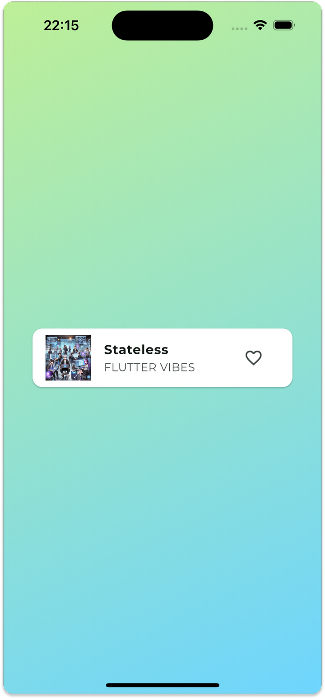
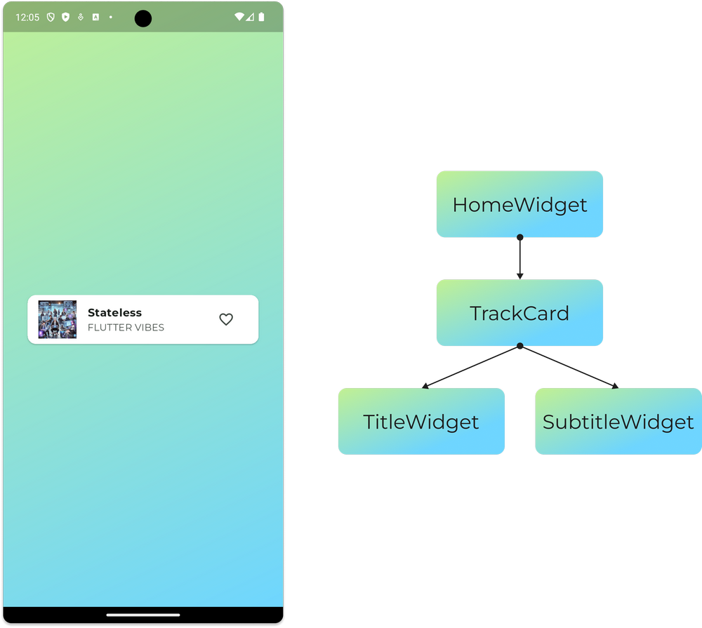
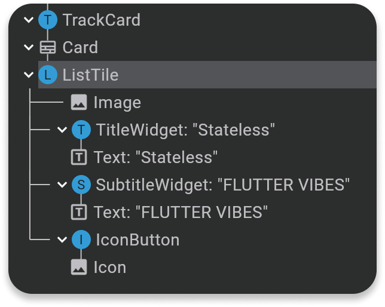

StatelessWidget и StatefulWidget. Жизненный цикл виджетов
Что такое StatelessWidget
Это виджет, который не изменяет своего состояния. У него:
- Нет изменяемых данных (свойства класса обычно
final) - Нет возможности передавать новые значения извне после инициализации
- Все, что описано в его
build-методе, остается неизменным
Например, если в StatelessWidget есть текст с фиксированным размером шрифта fontSize: 16, он всегда будет 16, и поменять его через пользовательский ввод или кнопку будет нельзя.
По сути, StatelessWidget — это статичный элемент интерфейса (статичная картинка), который отображает неизменяемые данные.
Построение UI с debug-принтами
Анализ построения интерфейса
Добавим внутри виджетов для конструктора класса и для метода build дебаг-принты, чтобы проанализировать когда происходит вызов виджетов и постройка интерфейса
Файл main.dart - Базовая структура приложения


// Точка входа в приложение - функция main()
void main() => runApp(MyApp());
// MyApp - корневой виджет приложения, наследуется от StatelessWidget
class MyApp extends StatelessWidget {
// const конструктор - оптимизация производительности
// super.key передает ключ родительскому классу для идентификации виджета
const MyApp({super.key});
@override
Widget build(BuildContext context) {
// MaterialApp - основа приложения, предоставляет Material Design
return MaterialApp(
title: "Flutter Course 2025", // Заголовок приложения
debugShowCheckedModeBanner: false, // Убираем debug баннер
// Настройка темы приложения
theme: ThemeData(
colorScheme: ColorScheme.fromSeed(
seedColor: Colors.greenAccent, // Основной цвет темы
),
fontFamily: "Montserrat", // Шрифт по умолчанию
),
// home - начальный экран приложения
home: Scaffold(
// Scaffold предоставляет базовую структуру экрана
body: HomeWidget(), // Наш кастомный виджет в качестве содержимого
),
);
}
}
Файл main.dart - HomeWidget с debug-принтами
// HomeWidget - главный виджет экрана, наследуется от StatelessWidget
class HomeWidget extends StatelessWidget {
// Конструктор с телом - здесь можем добавить debug-принт
// НЕ const, потому что в теле есть debugPrint
HomeWidget({super.key}) {
debugPrint("💛 HomeWidget constructor"); // Отслеживаем создание виджета
}
@override
Widget build(BuildContext context) {
debugPrint("💛 HomeWidget build"); // Отслеживаем вызов build метода
// Container - базовый виджет для создания прямоугольной области
return Container(
width: double.infinity, // Занимает всю доступную ширину
// BoxDecoration - оформление контейнера (фон, границы, тени)
decoration: BoxDecoration(
// LinearGradient - линейный градиент от одного цвета к другому
gradient: LinearGradient(
colors: [Color(0xFFBFF098), Color(0xFF6FD6FF)], // Зеленый → Голубой
begin: Alignment.topLeft, // Начало градиента - левый верх
end: Alignment.bottomRight, // Конец градиента - правый низ
),
),
// child - дочерний виджет внутри Container
child: SafeArea(
// SafeArea учитывает системные области (статус бар, навигация)
child: Center(
// Center размещает дочерний виджет по центру
child: Padding(
// Padding добавляет отступы вокруг дочернего виджета
padding: const EdgeInsets.all(32.0), // 32 пикселя со всех сторон
child: TrackCard(), // Наш кастомный виджет карточки
),
),
),
);
}
}
Создание StatelessWidget компонентов
Файл 1_stateless_widget.dart
// WhiteWidget - контейнер с белым фоном для карточки
class WhiteWidget extends StatelessWidget {
// Конструктор НЕ const из-за debugPrint в теле
WhiteWidget({super.key}) {
debugPrint("💛 WhiteWidget constructor"); // Отслеживаем создание
}
@override
Widget build(BuildContext context) {
debugPrint("💛 WhiteWidget build"); // Отслеживаем вызов build
return Container(
width: double.infinity, // Растягиваем на всю ширину
padding: const EdgeInsets.all(20), // Внутренние отступы 20px
// Оформление контейнера
decoration: BoxDecoration(
borderRadius: BorderRadius.circular(16), // Скругленные углы
color: Colors.white, // Белый фон
),
// Column - вертикальное расположение дочерних виджетов
child: Column(
children: [
TrackCard(), // Наша карточка трека
],
),
);
}
}
// TrackCard - виджет карточки с информацией о треке
class TrackCard extends StatelessWidget {
// Конструктор НЕ const из-за debugPrint
TrackCard({super.key}) {
debugPrint("💛TrackCard constructor"); // Отслеживаем создание
}
@override
Widget build(BuildContext context) {
debugPrint("💛TrackCard build"); // Отслеживаем вызов build
// Card - готовый виджет карточки с тенью и скругленными углами
return Card(
color: Colors.white, // Белый фон карточки
// ListTile - готовый виджет для отображения элемента списка
// Автоматически располагает leading, title, subtitle, trailing
child: ListTile(
// leading - виджет слева (обычно иконка или аватар)
leading: Image.asset("assets/images/pro.webp"), // Изображение трека
// title - основной текст (заголовок)
title: TitleWidget(text: "Stateless"), // Кастомный виджет заголовка
// subtitle - дополнительный текст под заголовком
subtitle: SubtitleWidget(text: "Flutter vibes"), // Кастомный виджет подзаголовка
// trailing - виджет справа (обычно кнопка или иконка)
trailing: IconButton(
onPressed: () {}, // Пустая функция - кнопка пока ничего не делает
icon: Icon(Icons.favorite_border), // Иконка "не в избранном"
),
),
);
}
}
// TitleWidget - виджет для отображения заголовка
class TitleWidget extends StatelessWidget {
final String text; // final - значение нельзя изменить после инициализации
// const конструктор - оптимизация производительности
// Можем использовать const, так как нет debugPrint в теле конструктора
const TitleWidget({super.key, this.text = ""}); // Значение по умолчанию
@override
Widget build(BuildContext context) {
// Text - базовый виджет для отображения текста
return Text(
text, // Отображаем переданный текст
style: TextStyle(
fontWeight: FontWeight.bold, // Жирный шрифт
),
);
}
}
// SubtitleWidget - виджет для отображения подзаголовка
class SubtitleWidget extends StatelessWidget {
final String text; // final поле для хранения текста
// Конструктор НЕ const из-за debugPrint в теле
SubtitleWidget({super.key, this.text = ""}) {
debugPrint("💛SubtitleWidget constructor"); // Отслеживаем создание
}
@override
Widget build(BuildContext context) {
debugPrint("💛SubtitleWidget build"); // Отслеживаем вызов build
return Text(text.toUpperCase()); // Преобразуем текст в верхний регистр
}
}

Построение дерева виджетов
Когда Flutter строит интерфейс, он делает это в определенном порядке:
- Flutter сначала создает виджет верхнего уровня (
HomeWidget) - Затем он вызывает у него
build-метод. - В
buildметоде описан дочерний виджетTrackCard, он сначала создаётся, а потом вызывается его методbuild. - В свою очередь в этом
buildметоде есть виджетыCardTitleWidgetSubtitleWidgetIconButton, которые так же создаются, а потом вызываются свои методыbuild()и так далее, пока не будем построено полностью дерево виджетов.
Важно
У каждого виджета, при вызове, создается экземпляр класса и потом вызывается метод build. И таких вызовов может быть ОЧЕНЬ много.
Flutter создает виджет, а затем вызывает у него build, а не наоборот!
Так как StatelessWidget не изменяется, после рендеринга ничего больше не происходит. Интерфейс застыл в неизменном состоянии.

Как обновить интерфейс?
Поскольку StatelessWidget не реагирует на изменения данных, изменить его стандартными способами нельзя. Однако есть один способ обновить верстку — hot reload.
Когда мы вызываем hot reload, Flutter перерисовывает все StatelessWidget'ы, но это не влияет на сохраненные данные (если бы они были). В консоли снова появится тот же самый список вызовов build.
Консольный вывод при запуске приложения
I/flutter (20888): 💛HomeWidget constructor
I/flutter (20888): 💛HomeWidget build
I/flutter (20888): 💛TrackCard constructor
I/flutter (20888): 💛TrackCard build
I/flutter (20888): 💛SubtitleWidget constructor
I/flutter (20888): 💛SubtitleWidget constructor
I/flutter (20888): 💛TitleWidget build
I/flutter (20888): 💛SubtitleWidget build
Попробуем добавить интерактивность в наш StatelessWidget:
Попытка добавить состояние в StatelessWidget
// Попытка добавить состояние в StatelessWidget (НЕ РАБОТАЕТ!)
class TrackCard extends StatelessWidget {
TrackCard({super.key}) {
debugPrint("💛 TrackCard constructor");
}
@override
Widget build(BuildContext context) {
// ❌ ПРОБЛЕМА: локальная переменная сбрасывается при каждом вызове build()
bool isFavorite = false; // Всегда будет false при каждом build()
debugPrint("💛 TrackCard build");
debugPrint("⚪️ isFavorite = $isFavorite"); // Всегда выведет false
return Card(
color: Colors.white,
child: ListTile(
leading: Image.asset("assets/images/pro.webp"),
title: TitleWidget(text: "Stateless"),
subtitle: SubtitleWidget(text: "Flutter vibes"),
trailing: IconButton(
onPressed: () {
// ❌ Изменяем локальную переменную, но это НЕ вызывает перерисовку
isFavorite = !isFavorite; // Изменение есть, но интерфейс не обновится
// StatelessWidget НЕ МОЖЕТ перерисовать себя!
// Нет метода setState() или другого способа уведомить Flutter
// о том, что нужно вызвать build() заново
},
// Условная иконка - но isFavorite всегда false
icon: isFavorite
? Icon(Icons.favorite, color: Colors.red) // Красное сердце
: Icon(Icons.favorite_border), // Пустое сердце
),
),
);
}
}
Результат
При нажатии на кнопку ничего не происходит. При горячей перезагрузке Hot Restart тоже ничего не меняется. isFavorite всегда имеет значение false, потому что каждый раз когда вызывается метод build, устанавливается это значение.
StatefulWidget - решение проблемы
Переходим к StatefulWidget
Переделаем TrackCard виджет из StatelessWidget в StatefulWidget
TrackCard как StatefulWidget
// ✅ StatefulWidget - РЕШЕНИЕ! Может хранить и изменять состояние
class TrackCard extends StatefulWidget {
TrackCard({super.key}) {
debugPrint("💛TrackCard constructor"); // Создается ОДИН раз
}
// createState() создает объект State, который будет управлять состоянием
@override
State createState() => _TrackCardState();
}
// _TrackCardState - класс состояния, наследуется от State
// Именно здесь хранятся изменяемые данные
class _TrackCardState extends State {
// ✅ Переменная состояния - хранится между вызовами build()
// НЕ сбрасывается при каждом build(), в отличие от StatelessWidget
bool isFavorite = false;
@override
Widget build(BuildContext context) {
debugPrint("💛TrackCard build");
debugPrint("⚪️isFavorite = $isFavorite"); // Теперь значение сохраняется!
return Card(
color: Colors.white,
child: ListTile(
leading: Image.asset("assets/images/pro.webp"),
title: TitleWidget(text: "Stateless"),
subtitle: SubtitleWidget(text: "Flutter vibes"),
trailing: IconButton(
onPressed: () {
// ✅ setState() - КЛЮЧЕВОЙ метод StatefulWidget!
// Он делает 2 вещи:
// 1. Выполняет код внутри () => {}
// 2. Говорит Flutter: "Нужно перерисовать этот виджет!"
setState(() {
isFavorite = !isFavorite; // Изменяем состояние
});
// После setState() Flutter автоматически вызовет build() заново
},
// Теперь условие работает правильно!
icon: isFavorite
? Icon(Icons.favorite, color: Colors.red) // Красное сердце
: Icon(Icons.favorite_border), // Пустое сердце
),
),
);
}
}
Если теперь нажать на иконку, то в консоле будут такие вызовы:
Консольный вывод при нажатии на кнопку
💛 TrackCard build
⚪️ isFavorite = true
💛 SubtitleWidget constructor
💛 SubtitleWidget constructor
💛 TitleWidget build
💛 SubtitleWidget build
Что происходит при setState()
HomeWidgetconstructor иHomeWidgetbuild не участвуют в перерисовке экрана, они остаются как есть.- Объект класса TrackCard constructor не вызывается. Перезапускается только метод
build()у Stateful виджета. - Меняется значение переменной состояния
isFavorite = true - Но... в данном случае перерисовываются ВСЕ виджеты которые вызываются внутри метода
build(). Даже если их не нужно перерисовывать.

Оптимизация построения виджетов
Как в данном случае можно оптимизировать работу приложения по отрисовке элементов на экране?
- Использовать везде, где есть возможность
const- константные конструкторы - Сделать
Statefulвиджетом только тот элемент который изменяется, например, в данном случае этоIconButton
У константных конструкторов не может быть "тела" поэтому придётся убрать debugPrint, но оставим их в методе build() чтобы увидеть разницу
Оптимизированная версия с const конструкторами
// Оптимизированная версия с const конструкторами
class TrackCard extends StatefulWidget {
TrackCard({super.key}) {
debugPrint("💛TrackCard constructor");
}
@override
State createState() => _TrackCardState();
}
class _TrackCardState extends State {
bool isFavorite = false;
@override
Widget build(BuildContext context) {
debugPrint("💛TrackCard build");
debugPrint("⚪️isFavorite = $isFavorite");
return Card(
color: Colors.white,
child: ListTile(
leading: Image.asset("assets/images/pro.webp"),
// ✅ ОПТИМИЗАЦИЯ: const виджеты НЕ пересоздаются при setState()
// Flutter сравнивает виджеты и видит, что это те же const объекты
title: const TitleWidget(text: "Stateless"), // const!
subtitle: const SubtitleWidget(text: "Flutter vibes"), // const!
// IconButton НЕ const, потому что его состояние (иконка) меняется
trailing: IconButton(
onPressed: () {
setState(() {
isFavorite = !isFavorite;
});
},
icon: isFavorite
? Icon(Icons.favorite, color: Colors.red)
: Icon(Icons.favorite_border),
),
),
);
}
}
// TitleWidget с const конструктором для оптимизации
class TitleWidget extends StatelessWidget {
final String text;
const TitleWidget({super.key, this.text = ""});
@override
Widget build(BuildContext context) {
debugPrint("💛TitleWidget build"); // Теперь НЕ вызывается при setState()!
return Text(
text,
style: TextStyle(
fontWeight: FontWeight.bold,
),
);
}
}
// SubtitleWidget с const конструктором для оптимизации
class SubtitleWidget extends StatelessWidget {
final String text;
const SubtitleWidget({super.key, this.text = ""}); // const конструктор!
@override
Widget build(BuildContext context) {
debugPrint("💛SubtitleWidget build"); // Теперь НЕ вызывается при setState()!
return Text(text.toUpperCase());
}
}
Результат оптимизации
Нажимаем на иконку и теперь виджеты TitleWidget и SubtitleWidget не вызывают лишний раз метод build()
У константных виджетов build() не вызывается. Потому что flutter сравнивает виджеты в дереве, и если это один и тот же виджет, то build у него он не вызывает.
Здесь важно чтобы виджеты использовали ключи this.key. Эти ключи как раз нужны, чтоб сравнивать виджеты до и после изменения состояния и отрисовки интерфейса.
Оптимизированный консольный вывод
I/flutter (20888): 💛TrackCard build
I/flutter (20888): ⚪️isFavorite = false
I/flutter (20888): 💛TrackCard build
I/flutter (20888): ⚪️isFavorite = true
I/flutter (20888): 💛TrackCard build
I/flutter (20888): ⚪️isFavorite = false
Максимальная оптимизация - отдельный StatefulWidget для кнопки
Вариант когда только IconButton это Stateful виджет:
Отдельный LikeButton виджет
// 🚀 МАКСИМАЛЬНАЯ ОПТИМИЗАЦИЯ: только кнопка - StatefulWidget
// Теперь TrackCard снова StatelessWidget, а состояние только у кнопки
class TrackCard extends StatelessWidget {
TrackCard({super.key}) {
debugPrint("💛TrackCard constructor");
}
@override
Widget build(BuildContext context) {
debugPrint("💛TrackCard build"); // Вызывается только при первом создании
return Card(
color: Colors.white,
child: ListTile(
leading: Image.asset("assets/images/pro.webp"),
title: const TitleWidget(text: "Stateless"),
subtitle: const SubtitleWidget(text: "Flutter vibes"),
// Заменяем IconButton на отдельный StatefulWidget
trailing: LikeButton(), // Только ЭТА кнопка будет перерисовываться!
),
);
}
}
// Эти виджеты остаются StatelessWidget с const конструкторами
class TitleWidget extends StatelessWidget {
final String text;
const TitleWidget({super.key, this.text = ""});
@override
Widget build(BuildContext context) {
debugPrint("💛TitleWidget build"); // НЕ вызывается при нажатии на кнопку!
return Text(
text,
style: TextStyle(
fontWeight: FontWeight.bold,
),
);
}
}
class SubtitleWidget extends StatelessWidget {
final String text;
const SubtitleWidget({super.key, this.text = ""});
@override
Widget build(BuildContext context) {
debugPrint("💛SubtitleWidget build"); // НЕ вызывается при нажатии на кнопку!
return Text(text.toUpperCase());
}
}
// 🎯 LikeButton - ЕДИНСТВЕННЫЙ StatefulWidget с минимальной областью ответственности
class LikeButton extends StatefulWidget {
const LikeButton({super.key}); // const конструктор для оптимизации
@override
State createState() => _LikeButtonState();
}
// Состояние ТОЛЬКО для кнопки лайка
class _LikeButtonState extends State {
bool isFavorite = false; // Состояние хранится только здесь
@override
Widget build(BuildContext context) {
// При setState() перерисовывается ТОЛЬКО эта кнопка!
// Все остальные виджеты (TrackCard, TitleWidget, SubtitleWidget) остаются нетронутыми
return IconButton(
onPressed: () {
setState(() {
isFavorite = !isFavorite; // Изменяем состояние
});
// Flutter перерисует ТОЛЬКО LikeButton, а не весь TrackCard!
},
icon: isFavorite
? Icon(Icons.favorite, color: Colors.red) // Красное сердце
: Icon(Icons.favorite_border), // Пустое сердце
);
}
}
Итоги и полезные советы
Полезные советы по использованию виджетов
- Нужно минимизировать вложенность виджетов (в случае если UI начинает реально лагать)
- Использовать по возможности
const- константные конструкторы - Выбирать более точечно виджеты которые будут изменяться и переделывать их в
Statefulвиджеты
Ключевые различия
- StatelessWidget - статичный виджет, не изменяет свое состояние
- StatefulWidget - динамический виджет, может изменять свое состояние через
setState() - Используйте
constконструкторы для оптимизации производительности - Делайте
Statefulтолько те виджеты, которые действительно должны изменяться
Понимание жизненного цикла виджетов и правильное использование StatelessWidget и StatefulWidget - это основа эффективной разработки на Flutter!